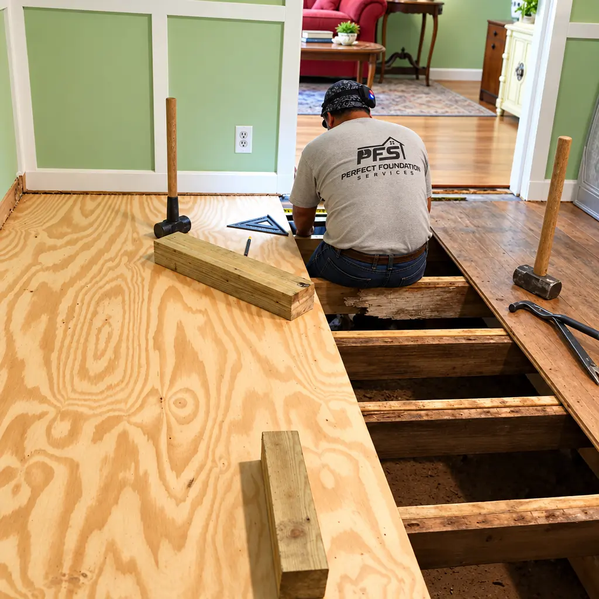
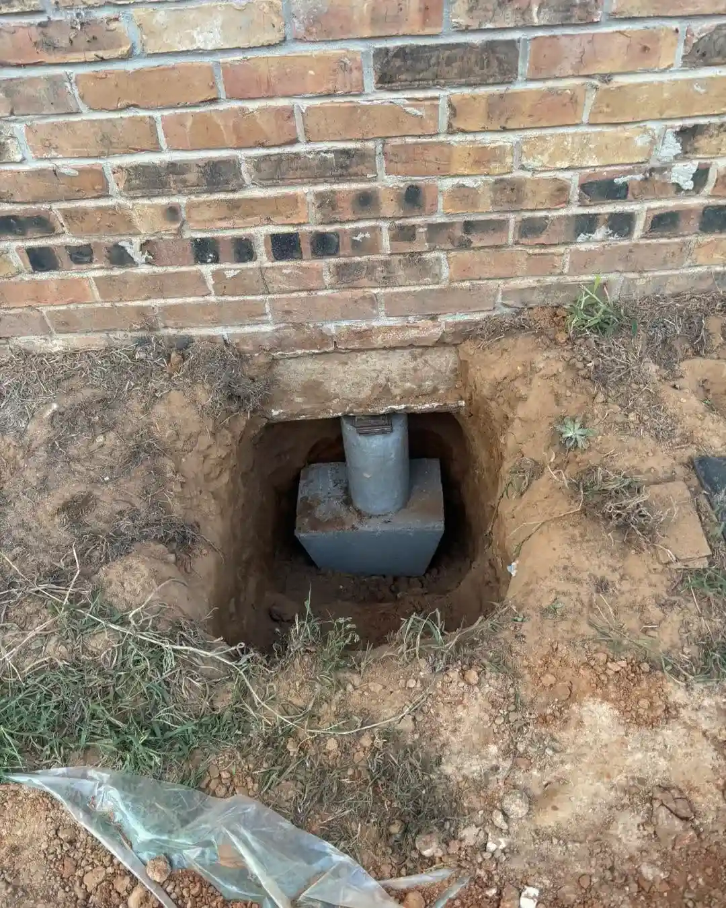
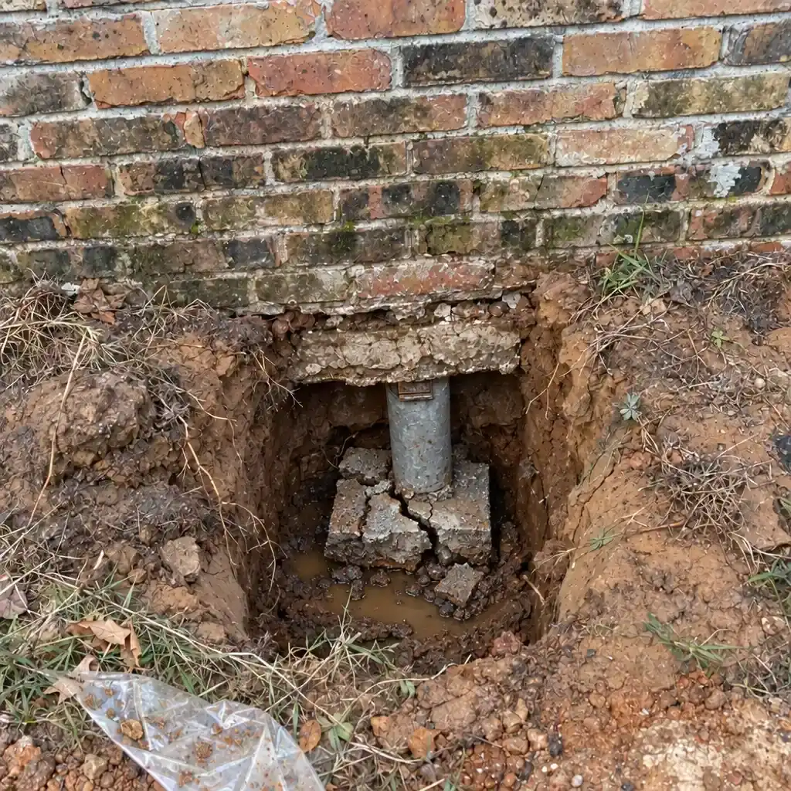
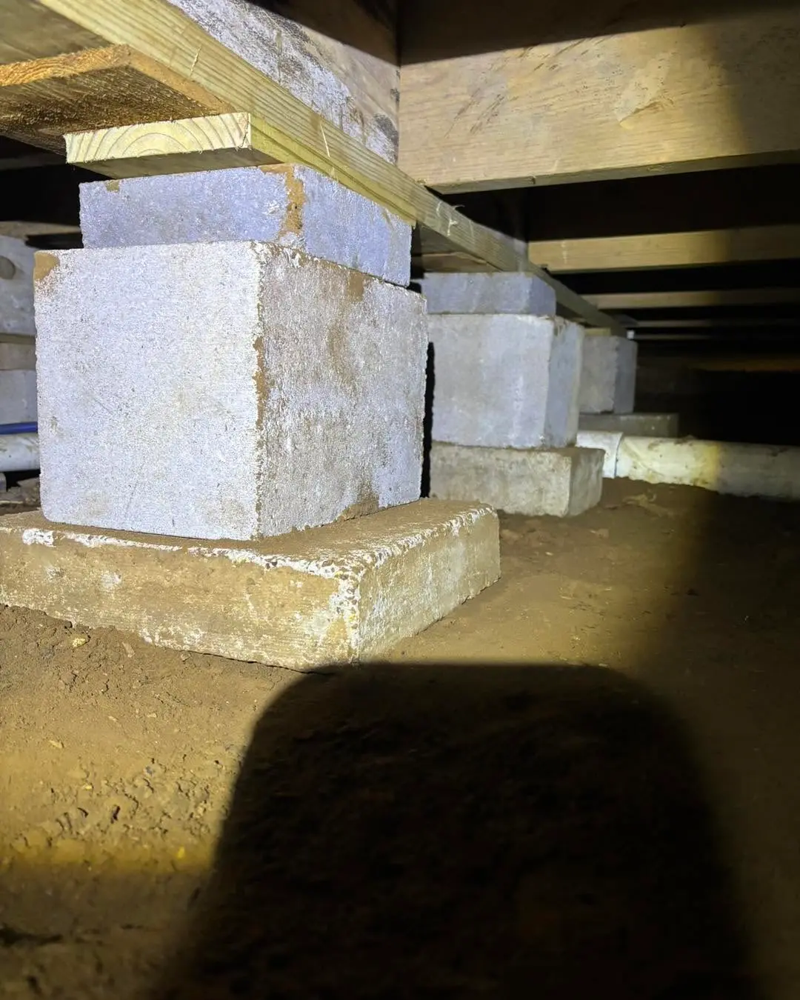
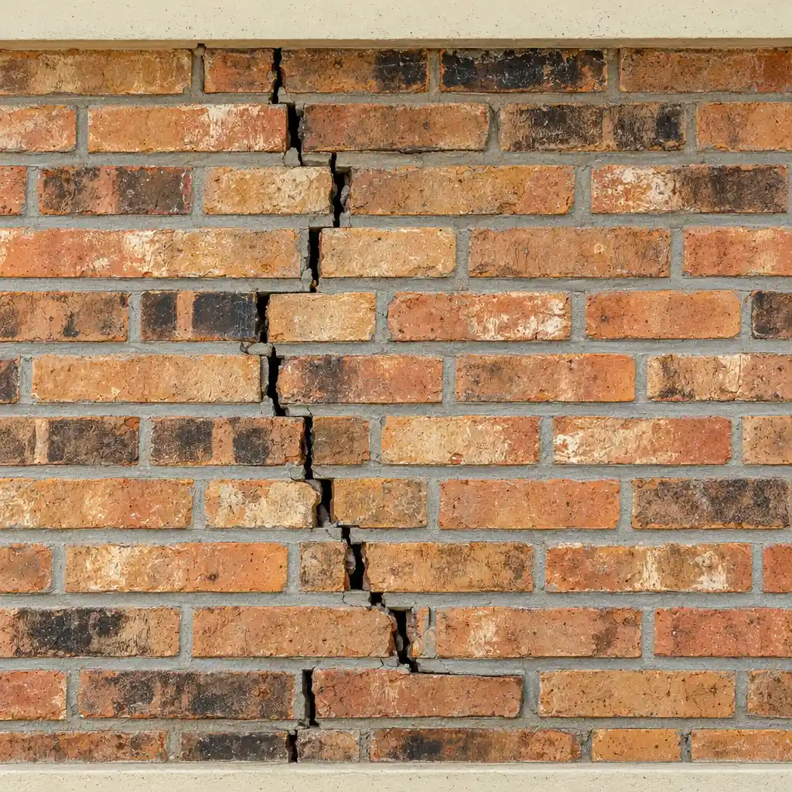
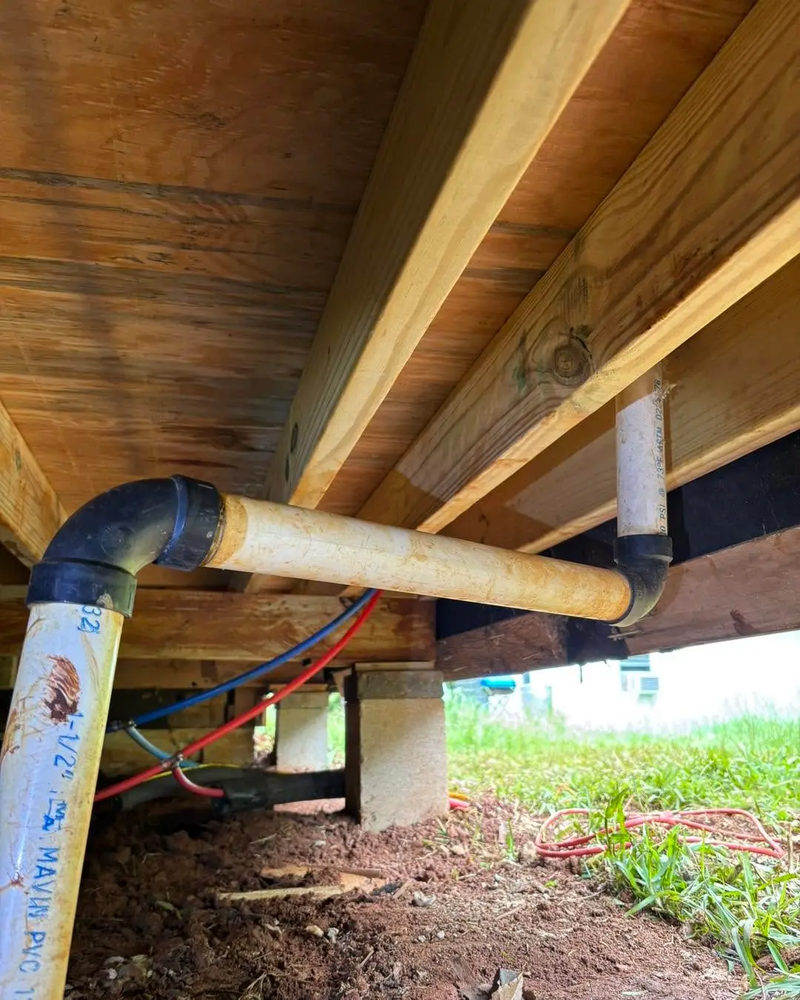
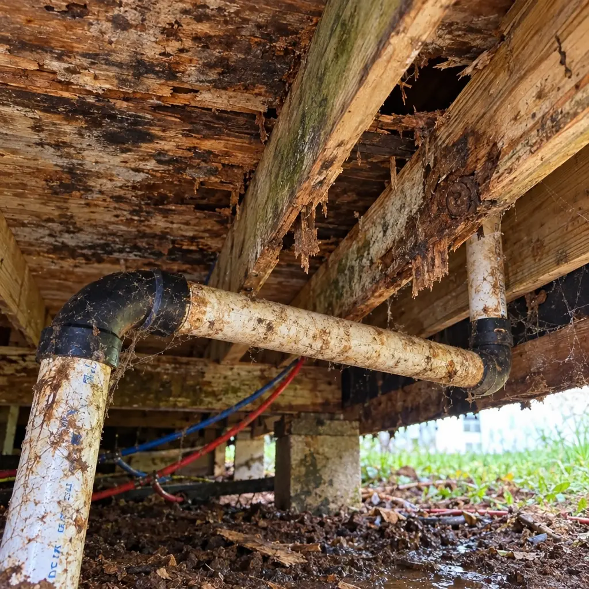

Reparación y nivelación de cimientos con precisión
Especialistas en casa de cemento, y madera y casas móviles en Nacogdoches, Lufkin y un radio de 100 millas alrededor del este de Texas.

Nivelación precisa para cada tipo de cimentación
Ya sea una vivienda residencial, un edificio comercial o una casa prefabricada, los problemas de cimentación varían. El suelo arcilloso del este de Texas se mueve con las estaciones. Evaluamos la estructura específica de su cimentación y aplicamos la solución correcta.
Residencial y comercial
Servicios de nivelación con seguro para viviendas unifamiliares y propiedades comerciales, con resultados confiables y profesionales.
Casa de madera
Inspección del espacio bajo la vivienda, ajuste de postes y nivelación del piso base en estructuras con vigas y pilotes.
Casa de cemento
Nivelación y reparación de viviendas existentes con losa de concreto que presentan asentamiento.
Mobile & Manufactured Homes
Técnica con nivel de agua, nivelación de casas móviles y sujeción con correas para mejorar la estabilidad y la alineación.
Nuestros servicios de reparación y nivelación de cimentaciones
Nivelación experta y reparación estructural para propiedades residenciales y comerciales en todo el este de Texas.

Nivelación de casas prefabricadas y móviles
Nivelación profesional de casas móviles y prefabricadas, reparación de soportes de cimentación e instalación de barreras de vapor según las condiciones del sitio y las necesidades observadas.

Reparación de cimentaciones de losa de concreto
Nivelación y reparación de viviendas existentes con cimentación de losa. El método y el alcance específicos se determinan después de la evaluación en el sitio.

Reparación de cimentaciones con vigas y pilotes
Nivelación, reparación de soportes de cimentación e instalación de barreras de vapor para viviendas con vigas y pilotes, según las condiciones observadas bajo la vivienda.
Trabajo real
Resultados comprobados
Arrastre el control de cada proyecto para ver el trabajo real antes y después realizado por Perfect Foundation Services LLC.
-
✕Antes:Hundimiento de la cimentación, desnivel, tensión estructural.
-
✓Después: Elevación restaurada, cimentación estabilizada, soporte estructural proporcionado.








Señales para solicitar una inspección de cimentación
Pisos desnivelados, puertas o ventanas atascadas, grietas en las paredes y separación de molduras son motivos para solicitar una evaluación en el sitio, no un diagnóstico en línea. Los síntomas pueden tener distintas causas que determina una evaluación de la propiedad.
Puertas y ventanas que se atoran
Cuando los soportes se asientan, la estructura pierde la alineación. Las puertas interiores se arrastran, no cierran o se abren solas.
Pisos desnivelados o inestables
Al caminar se siente una inclinación o movimiento como de trampolín. Los bloques hundidos o las cuñas dañadas crean puntos bajos y flexión del piso.
Separación en la línea central
En casas dobles, la unión central se separa debido al asentamiento irregular, creando grietas en el techo y cambios en el piso.
Grietas en paredes y drywall
Grietas por esfuerzo que se ramifican en diagonal desde esquinas de puertas, marcos de ventanas o uniones del techo cuando la estructura se flexiona.
Separación alrededor de molduras
Molduras de techo, rodapiés o frisos exteriores que se separan de las paredes: una señal de movimiento activo en los cimientos.
Tablillas combadas o con espacios
Paneles perimetrales que se doblan por el peso o quedan a varios centímetros del suelo cuando se mueve el suelo arcilloso del este de Texas.
El proceso desde la inspección hasta el proyecto
Servicio local, transparente y directo, desde la primera consulta hasta la revisión final.
Solicitar inspección
Ingrese la dirección de su propiedad, el tipo de cimentación y los síntomas. Nuestro equipo confirma la disponibilidad dentro de nuestro territorio de 100 millas.
Confirmación de ruta y condiciones
Confirmamos la dirección, el tipo de cimentación y los términos de la cita; luego programamos una inspección con instrucciones claras de acceso.
Hallazgos y alcance
Los hallazgos y cualquier alcance de reparación propuesto se explican claramente en el lugar. El propietario decide si continúa, sin tácticas de presión.
Reparación y revisión
Nuestro equipo realizará la reparación de la cimentación según lo indicado en su cotización y después realizará una revisión final con el propietario.

Verifique si su propiedad está dentro de nuestras áreas de servicio y contáctenos para comenzar con Perfect Foundation Services.
Con la confianza de todo el este profundo de Texas
Lo que dicen los residentes de Nacogdoches, Lufkin y comunidades cercanas sobre Perfect Foundation Services LLC.
Proceso sencillo y explicaciones claras
"Recomiendo ampliamente Perfect Foundation Services. Habíamos notado grietas alrededor de nuestra vivienda y nos preocupaba la cimentación. Vinieron, lo inspeccionaron todo y explicaron las reparaciones necesarias. Completaron el trabajo y hicieron que todo el proceso fuera fácil de entender. ¡Una gran empresa!"

Profesionales y comunicativos
"Escribo esta reseña para mis padres porque vinieron y repararon la casa de losa de mis padres. Fueron muy profesionales durante todo el tiempo y se comunicaron bien. ¡Los recomendaría ampliamente a cualquiera que necesite nivelar su casa!"

Nivelado correctamente
"Mi casa necesitaba nivelarse y reemplazar bloques. Nivelaron la casa y el gran porche trasero que estaba cayéndose. ¡Lo hicieron muy rápido y eficientemente! Esta es la segunda vez que nivelan mi casa y la primera vez que sentí que otra empresa no lo hizo correctamente. Perfect Foundation lo hizo de manera completamente diferente y ahora se siente mucho mejor. ¡100 % recomendado!"

A tiempo y fiel a la cotización
"Los llamé un lunes y recibí una cotización. Vinieron dentro de dos días, A TIEMPO, con un equipo y solucionaron el problema de cimentación de nuestra propiedad de alquiler. Cumplieron con la cotización y el plazo. ¡Quedamos 100 % satisfechos e impresionados con esta empresa! Los recomiendo ampliamente a cualquier persona con un problema de cimentación."

Equipo completo y trabajador
"Perfect Foundation Services fue una excelente empresa con la que trabajar. Su equipo hizo un esfuerzo adicional para reparar el piso de nuestra antigua casa de campo. También notaron problemas que podrían convertirse en un inconveniente si no se atienden. ¡Agradecemos todo su trabajo! Los recomendaríamos para cualquier necesidad de vivienda."

Servicio al cliente increíble
"Perfect Foundation Services hizo un gran trabajo nivelando nuestra casa. Los recomendamos ampliamente y volveremos a usar sus servicios. Su atención al cliente fue increíble y mostraron mucho cuidado en su trabajo."

Preguntas frecuentes
Respuestas claras y honestas sobre la nivelación de casas móviles y nuestros servicios de cimentación.
Solicitar una inspección de cimentación
¿Tiene preguntas o está listo para programar una evaluación? Complete el siguiente formulario y nuestro equipo se comunicará con usted directamente.